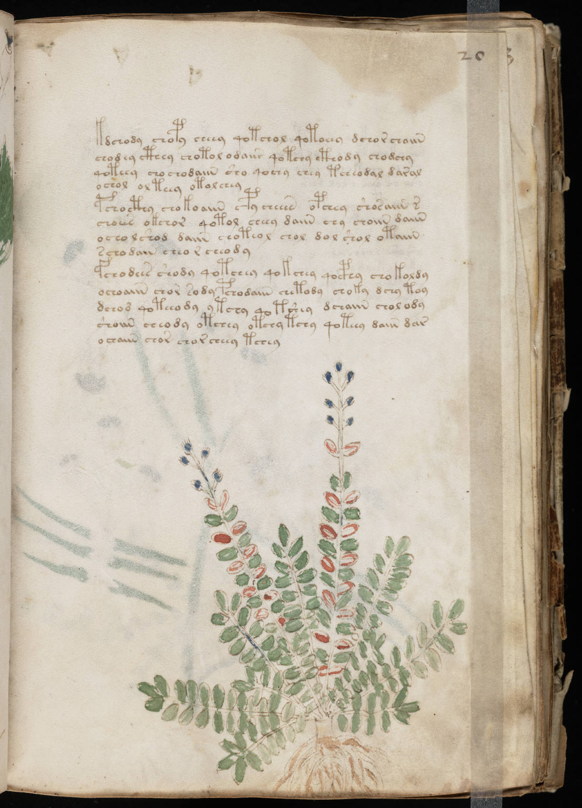

f20r
1kdchody chopy cheey qotchol qotoeey dchor choiin2chodey cthey chotol odaiir qotchy cthody chodchy3qoteey cho chodaiin sho qochy chey tcheodal daral4ochol ol teey otolchey5pchocthy chokoaiin cpy cheeen opchey shosaiin r6choees okchor qotol cheey daiin chy choiin daiin7ocholshod daiin choteol chol dol shol otaiin8schodain cheo r cheody9fchodees shody qotchey qokchey qocphy chokoldy10ochoaiin chor sody pchodaiin chetody choky dchy toy11dchod qoteeody ytchy qotshey dchaiin cholody12shoiin cheody otchey otchy tchy qoteey daiin dar13ochaiin chor chor cheey tchey
